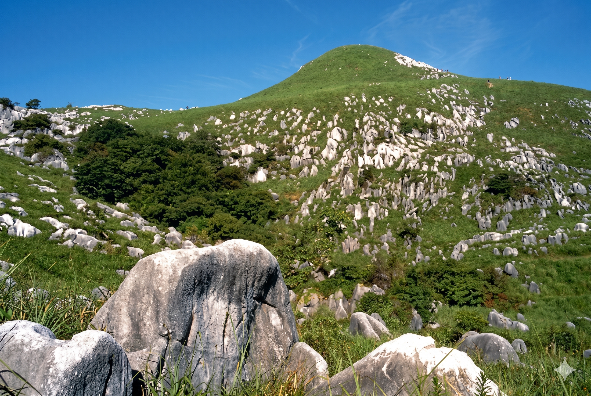

見どころ・体験できること
標高300〜700m、南北6kmに広がる九州最大のカルスト台地。白い石灰岩が草原のなかに点々と並ぶ「羊群原」の風景は、日本国内でも他に類を見ない絶景です。国指定特別天然記念物の「千仏鍾乳洞」では、洞内を流れる清水のなかを歩いて進む体験が大人気。
毎年3月の野焼きのあと萌え出る緑、秋に輝くすすき野原と、季節ごとの表情の変化も魅力です。カルスト地形に固有の草原生態系には希少な動植物が生息しており、平尾台自然観察センター（無料）では生き物の解説や観察プログラムも受けられます。
🗓 おすすめシーズン
3月（野焼き）：壮大な炎と煙の光景
4〜5月：野焼き後の新緑・春の花
10〜11月：黄金色に輝くすすき野原
4〜5月：野焼き後の新緑・春の花
10〜11月：黄金色に輝くすすき野原
平尾台のカルスト草原生態系が持つ生物多様性の価値については 生物多様性とは？
📍 基本情報・アクセス
| 所在地（自然観察センター） | 〒803-0180 福岡県北九州市小倉南区平尾台1-4-40 |
|---|---|
| 自然観察センター | 無料 9:00〜17:00 月曜休館 |
| 千仏鍾乳洞 | 大人900円・中学生600円・小学生500円・幼児200円 9:00〜17:00（土日祝〜18:00） |
| 車でのアクセス | 北九州都市高速・横代出口より約25分 |
| 公共交通 | JR石原駅よりタクシー約15分（公共バスは限定的） |
| 駐車場 | 市営駐車場：普通車300円/日・大型車1,000円/日（1,100台規模） |
| 公式サイト | 平尾台自然観察センター |